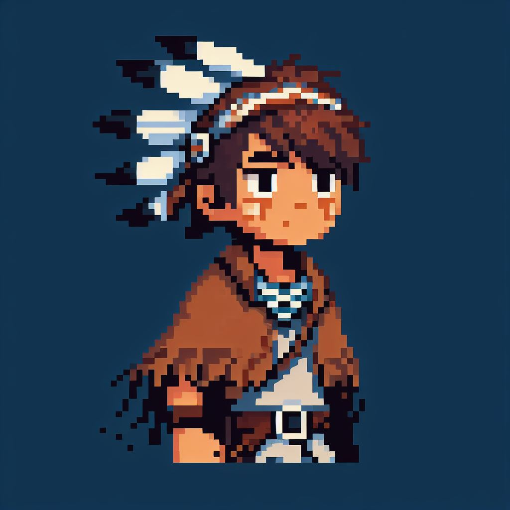
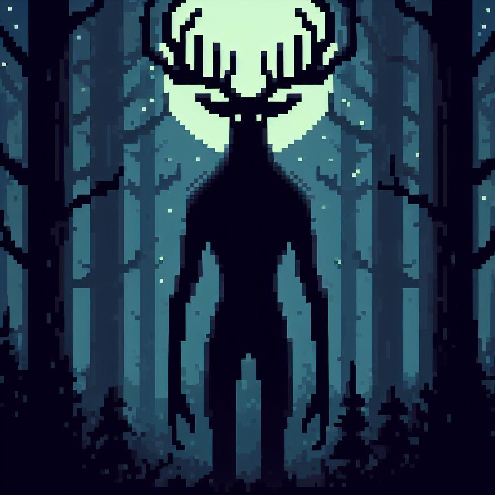

TODO Homepage
Deep in the forest lurks a dangerous beast which feeds off of the flesh of unsuspecting venturers, the wendigo. The wendigo romes the woods, from village to village, hunting the villagers until noone remanes, then moving on. If your village has the misfortune of being found by the wendigo, your best hope is to abandon the village and find somewhere else to live. Algonquin legend has it that the wendigo was formed from greed and jealousy, and now romes the forest, always on the hunt, never getting enough.
You play as Itawi, an Algonquin boy whose village is being hunted by the wendigo. To save your village, you must defeat the wendigo, however, this will not be easy. You must venture into the forest -- the home of the wendigo -- and come out alive on the other side. The village is counting on you.
| Genre: | Action-Adventure |
|---|---|
| Target Audience: | Those who are Ages 10+ and enjoy story based adventures |
| ESRB Rating: | Everyone 10+ contains mild fantasy violence |
| Mechanics: | Exploration, problem solving, combat |
| Platforms: | Steam, Linux, Windows, MacOS |
Release Date: Unknown

TODO Game Concept
TODO Characters
Itawi
 Itawi is a village boy. He is smart and fast. He will need both of these skills to save his village from the fearsom wendigo.Wendigo
 A creature born from greed. Now it lurks in the forest, hunting those who would venture into its domain.TODO Merchandise
Transmedia
In a future update, I plan on adding an online story of the first Wendigo. This story will be told through a mix of videos and graphic novel style graphics.TODO About
TODO Resources
- ESRB Logo Generator: https://jsfiddle.net/stinkysGTI/94fzgLam/62/
- Steam Logo https://en.m.wikipedia.org/wiki/File:Steam_icon_logo.svg
- Linux Logo https://upload.wikimedia.org/wikipedia/commons/thumb/3/35/Tux.svg/150px-Tux.svg.png
- Windows Logo https://upload.wikimedia.org/wikipedia/commons/thumb/5/5f/Windows_logo_-_2012.svg/768px-Windows_logo_-_2012.svg.png
- MacOS Logo https://upload.wikimedia.org/wikipedia/commons/thumb/a/ab/Icon-Mac.svg/768px-Icon-Mac.svg.png
-
AI Generated Images: https://designer.microsoft.com/
- Banner image
- Itawi character image
- Wendigo character image
- All images in cinimatic sequense/trailer
{kind=link}
{kind=link}
{kind=link}
{kind=link}